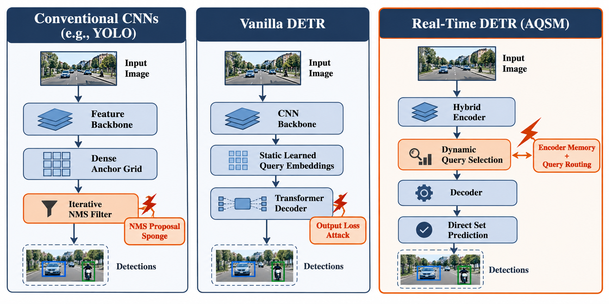
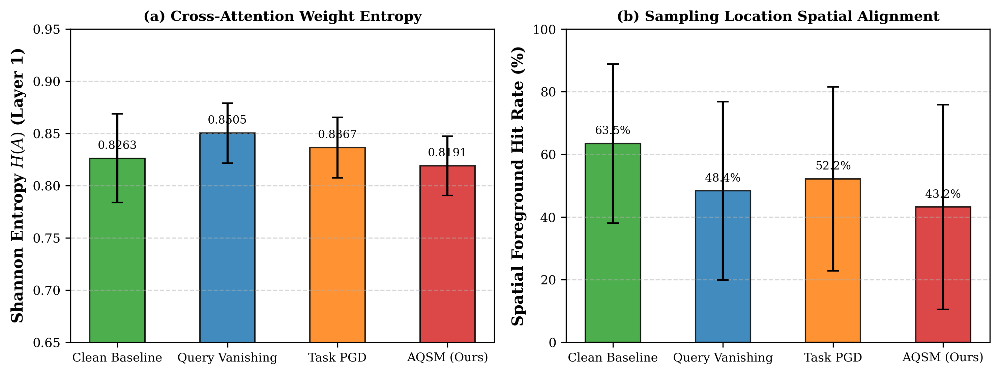

Decomposing Failure Modes of Real-Time DETR under Encoder Adversarial Attacks
1 Faculty of Information Technology 1, Posts and Telecommunications Institute of Technology (PTIT), Hanoi, Vietnam 1 Khoa Công nghệ Thông tin 1, Học viện Công nghệ Bưu chính Viễn thông (PTIT), Hà Nội, Việt Nam
* Corresponding authorTác giả liên hệ: levietanhtrump@gmail.com
Abstract Overview Tổng quan Tóm tắt
Real-Time Detection Transformers (RT-DETR) achieve predictable edge inference latency by replacing Non-Maximum Suppression (NMS) with bipartite matching and dynamic query selection. However, because proposal routing sits directly atop the multi-scale encoder pyramid, adversarial attacks inevitably disrupt both encoder feature memories and candidate selection. We deploy Adversarial Query Selection Manipulation (AQSM) as a diagnostic probe within a $2 \times 2$ factorial interventional tensor-swap design to isolate and quantify these failure pathways.
Real-Time Detection Transformers (RT-DETR) đạt độ trễ thực thi dự đoán được trên thiết bị biên nhờ thay thế Non-Maximum Suppression (NMS) bằng bipartite matching và dynamic query selection. Tuy nhiên, do tầng lựa chọn ứng viên nằm ngay trên kim tự tháp đặc trưng đa tỷ lệ của Encoder, các tấn công đối kháng tất yếu làm sai lệch đồng thời cả bộ nhớ đặc trưng Encoder lẫn luồng định tuyến Query. Nghiên cứu này triển khai Adversarial Query Selection Manipulation (AQSM) như một công cụ chẩn đoán thực nghiệm trong thiết kế can thiệp hoán đổi tensor $2 \times 2$ nhằm cô lập và định lượng các kênh gây sụp đổ mô hình.
Read complete academic abstract text Đọc toàn bộ nội dung tóm tắt học thuật
Real-Time Detection Transformers (RT-DETR) achieve predictable edge inference latency by replacing Non-Maximum Suppression (NMS) with bipartite matching and dynamic query selection. However, because proposal routing sits directly atop the multi-scale encoder pyramid, adversarial attacks inevitably disrupt both encoder feature memories and candidate selection. We deploy Adversarial Query Selection Manipulation (AQSM) as a diagnostic probe within a $2 \times 2$ factorial interventional tensor-swap design to isolate and quantify these failure pathways across $1,000$ MS COCO val2017 images at native $640 \times 640$ resolution.
Under clean baseline conditions, RT-DETR-R18VD achieves $65.50\%$ mAP@50. Stationary AQSM degrades performance to $3.07\%$ (relative retention $4.69\%$). Repeated-measures ANOVA and 2-player Shapley attribution reveal that Encoder Representation Damage ($M$) is the primary failure driver, accounting for $61.78\%$ macro Shapley share ($70.68\%$ log-scale; ANOVA partial $\eta_p^2 = 0.795$). Concurrently, Query Prior Eviction ($Q$) represents an essential secondary transmission channel: isolated adversarial query indexing on clean memory drops retention by $-26.21$ pp to $39.29\%$ ($38.22\%$ Shapley share; ANOVA partial $\eta_p^2 = 0.704$). Fine-grained geometric telemetry shows that attention weights do not disperse into diffuse noise ($H(A) = 0.8009 \to 0.7944, d = -0.13$); rather, reference coordinates undergo spatial translation ($\Delta_{\mathrm{Hungarian}} = 0.2258$), clustering tightly into non-object boundaries with spatial foreground hit rates ($45.13\%$) statistically indistinguishable from uniform sampling chance ($44.26\%$, TOST $p = 0.0373 < 0.05$).
Hardware edge profiling across NVIDIA Jetson Orin Nano, Raspberry Pi 5, and Intel Core i7-1185G7 confirms that RT-DETR retains strict $O(1)$ decoding execution time ($14.2$ ms on Orin Nano) across all attack perturbations, demonstrating structural immunity to computational proposal-sponge latency attacks that inflate YOLOv8 inference time by up to $+232\%$. Finally, we evaluate defense mechanisms: while a runtime statistical Encoder Selection Monitor (ESM) detects stationary AQSM ($\text{TPR} = 37.14\%, \text{AUROC} = 0.7593$), white-box Carlini-Tramèr adaptive evasion suppresses detection to $1.43\%$. In contrast, architectural hardening via Static Query Augmentation (SQA) recovers $+15.01$ pp mAP@50 under stationary attack by structurally preserving foreground query capacity.
Real-Time Detection Transformers (RT-DETR) đạt độ trễ thực thi dự đoán được trên thiết bị biên nhờ thay thế Non-Maximum Suppression (NMS) bằng bipartite matching và dynamic query selection. Tuy nhiên, do tầng lựa chọn ứng viên nằm ngay trên kim tự tháp đặc trưng đa tỷ lệ của Encoder, các tấn công đối kháng tất yếu làm sai lệch đồng thời cả bộ nhớ đặc trưng Encoder lẫn luồng định tuyến Query. Nghiên cứu này triển khai Adversarial Query Selection Manipulation (AQSM) như một công cụ chẩn đoán thực nghiệm trong thiết kế can thiệp hoán đổi tensor $2 \times 2$ nhằm cô lập và định lượng các kênh gây sụp đổ mô hình trên $1.000$ ảnh MS COCO val2017 ở độ phân giải gốc $640 \times 640$.
Ở điều kiện sạch danh định, RT-DETR-R18VD đạt $65.50\%$ mAP@50. Tấn công AQSM tĩnh làm suy giảm độ chính xác xuống $3.07\%$ (tỷ lệ duy trì $4.69\%$). Phân tích ANOVA đo lường lặp lại và phân bổ Shapley 2 người chơi chứng minh Tổn hại Biểu diễn Bộ nhớ Encoder ($M$) là động lực chính gây sụp đổ, chiếm $61.78\%$ tỷ trọng Shapley vĩ mô ($70.68\%$ thang log; ANOVA partial $\eta_p^2 = 0.795$). Đồng thời, Trục xuất Query Prior ($Q$) đại diện cho kênh truyền dẫn thứ cấp cốt lõi: việc hoán đổi chỉ số query đối kháng trên bộ nhớ sạch làm giảm tỷ lệ duy trì $-26.21$ pp xuống $39.29\%$ ($38.22\%$ tỷ trọng Shapley; ANOVA partial $\eta_p^2 = 0.704$). Telemetry hình học chi tiết chỉ ra rằng trọng số chú ý không bị phân tán thành nhiễu mờ ($H(A) = 0.8009 \to 0.7944, d = -0.13$); thay vào đó, các tọa độ tham chiếu chịu sự trôi dạt không gian ($\Delta_{\mathrm{Hungarian}} = 0.2258$), co cụm dày đặc ở ranh giới ngoài vật thể với tỷ lệ anchor trúng foreground ($45.13\%$) tương đương thống kê với lấy mẫu ngẫu nhiên đều ($44.26\%$, TOST $p = 0.0373 < 0.05$).
Đo đạc hiệu năng phần cứng biên trên NVIDIA Jetson Orin Nano, Raspberry Pi 5 và Intel Core i7-1185G7 xác nhận RT-DETR duy trì thời gian giải mã đơn định $O(1)$ ($14.2$ ms trên Orin Nano) dưới mọi dạng nhiễu đối kháng, chứng minh tính miễn nhiễm cấu trúc trước các tấn công bẫy trễ proposal-sponge vốn làm tăng thời gian thực thi của YOLOv8 lên tới $+232\%$. Cuối cùng, chúng tôi đánh giá các cơ chế phòng thủ: dù bộ giám sát thống kê runtime (ESM) phát hiện được AQSM tĩnh ($\text{TPR} = 37.14\%, \text{AUROC} = 0.7593$), kẻ tấn công thích nghi Carlini-Tramèr có thể ép tỷ lệ phát hiện xuống chỉ còn $1.43\%$. Ngược lại, giải pháp gia cố kiến trúc thông qua Static Query Augmentation (SQA) khôi phục $+15.01$ pp mAP@50 dưới tấn công tĩnh nhờ bảo tồn năng lực truy vấn foreground về mặt cấu trúc.
Figure 1: The Encoder-Decoder Query Selection Bottleneck
RT-DETR evaluates $S = 8,400$ candidate anchors across multi-scale feature maps ($S_3, S_4, S_5$) and dynamically selects the top $N_q = 300$ highest-confidence proposals to initialize decoder content queries and reference coordinates.
RT-DETR đánh giá $S = 8,400$ candidate anchors trên các bản đồ đặc trưng đa tỷ lệ ($S_3, S_4, S_5$) và lựa chọn linh hoạt top $N_q = 300$ đề xuất có độ tự tin cao nhất để khởi tạo decoder content queries và tọa độ tham chiếu.

Figure 2: Taxonomy of Adversarial Threat Models
Contrasting Conventional CNN Attacks, Output-Space DETR Attacks, and Encoder Query Selection Manipulation (AQSM). While CNN attacks target fixed anchor grids and vanilla DETR attacks manipulate static embeddings, AQSM targets the dynamic 8,400-to-300 selection head, inducing joint corruption of encoder memory representations and query routing priors.
Đối chiếu các cuộc tấn công anchor cố định trên CNN, tấn công so khớp hai phía ở đầu ra trên DETR thuần, và thao túng lựa chọn truy vấn bộ mã hóa (AQSM) trên RT-DETR. Trong khi tấn công CNN nhắm vào lưới anchor cố định và DETR thuần nhắm vào embedding truy vấn tĩnh, AQSM nhắm vào tầng chọn lọc linh hoạt từ 8.400 xuống 300 đề xuất, đồng thời làm sai lệch biểu diễn bộ nhớ và định tuyến không gian.

Target fixed dense anchor grids ($H \times W \times A$). Adversarial gradients manipulate candidate classifications, flooding or suppressing heuristic Non-Maximum Suppression (NMS) windows.
Nhắm vào lưới anchor cố định dày đặc ($H \times W \times A$). Gradient đối kháng bóp méo phân loại ứng viên, gây ngập lụt hoặc vô hiệu hóa cửa sổ Non-Maximum Suppression (NMS).
Target fixed learned object query embeddings in vanilla DETR / Deformable DETR. Attacks maximize Hungarian bipartite matching cost at final classification and bounding-box heads.
Nhắm vào các query embedding học sẵn cố định trong DETR / Deformable DETR gốc. Tấn công tối đa hóa hàm mất mát so khớp hai phía Hungarian tại các đầu ra phân loại và bounding-box cuối.
Targets the dynamic $8,400 \to 300$ candidate selection head. By perturbing encoder logits, AQSM evicts foreground anchors into background noise, jointly disrupting memory and query priors.
Nhắm trúng tầng chọn lọc đề xuất động $8.400 \to 300$. Bằng cách làm sai lệch logits của encoder, AQSM trục xuất anchor foreground vào nền rác, làm sụp đổ đồng thời bộ nhớ và query prior.
2×2 Factorial Activation Patching on COCO val2017
By surgically swapping memory ($M$) and query ($Q$) representations across clean and adversarial optimization passes, we quantify their isolated and joint contributions to detector failure.
Bằng can thiệp hoán đổi có kiểm soát giữa biểu diễn bộ nhớ ($M$) và truy vấn ($Q$) qua các lượt chạy sạch và đối kháng, nghiên cứu định lượng đóng góp độc lập và đồng thời của từng yếu tố gây sụp đổ mô hình.
Why Proposals Fail: Misrouting, Not Attention Scattering
Fine-grained telemetry resolves prevailing misconceptions: attention weights remain sharp, but reference coordinates are geometrically misdirected into background clutter.
Telemetry chi tiết làm sáng tỏ hiểu lầm phổ biến: trọng số deformable attention duy trì độ sắc nét, nhưng tọa độ tham chiếu bị định tuyến lệch vào các cụm nền.
Figure 5: Feature Cosine & Query Overlap
COCO N=1,000Cosine similarity degradation across encoder scales ($S_3 \to S_5$) and collapse of top-300 proposal overlap under AQSM.
Sự suy giảm tương đồng Cosine qua các scale ($S_3 \to S_5$) và sụp đổ độ trùng lặp top-300 query dưới tấn công AQSM.

Figure 6: Deformable Attention Telemetry
Layer-wise(a) Normalized attention entropy $H(A)$ vs (b) Foreground spatial sampling hit rate across 3 decoder layers.
(a) Entropy trọng số attention chuẩn hóa $H(A)$ vs (b) Tỷ lệ điểm lấy mẫu trúng foreground qua 3 decoder layer.

Attention Weights Do Not Disperse Trọng số Attention Không Tán Xạ
Normalized deformable attention entropy remains stable ($0.8009 \to 0.7944, \Delta = -0.0065, d = -0.13$). Sampling weights remain sharply localized around reference coordinates rather than scattering into diffuse noise.
Entropy attention biến dạng chuẩn hóa duy trì ổn định ($0.8009 \to 0.7944, \Delta = -0.0065, d = -0.13$). Trọng số lấy mẫu tập trung sắc nét quanh điểm tham chiếu thay vì phân tán thành nhiễu mờ.
Spatial Target Misrouting Định tuyến Sai lệch Mục tiêu
Initial reference coordinates undergo geometric translation ($\Delta_{\mathrm{Hungarian}} = 0.2258$), clustering tightly into non-object boundaries, starving decoder heads of foreground features and pulling hit rate from $63.51\%$ to $43.21\%$.
Tọa độ tham chiếu ban đầu chịu sự dịch chuyển hình học ($\Delta_{\mathrm{Hungarian}} = 0.2258$), co cụm dày đặc ở ranh giới phi vật thể, bỏ đói đầu giải mã và kéo tỷ lệ trúng từ $63.51\%$ xuống $43.21\%$.
TOST Equivalence to Uniform Sampling TOST Tương đương Lấy mẫu Đều
A formal Two One-Sided Tests (TOST) procedure confirms equivalence of post-attack anchor hits ($45.13\%$) to uniform grid chance ($44.26\%$, $p_{\mathrm{TOST}} = 0.0373 < 0.05$ under $\pm 2.0$ pp bound) while firmly rejecting camera center priors ($p < 10^{-20}$).
Kiểm định hai phía một mẫu Two One-Sided Tests (TOST) xác nhận tỷ lệ chạm foreground sau tấn công ($45.13\%$) tương đương thống kê với xác suất lấy mẫu đều ($44.26\%$, $p_{\mathrm{TOST}} = 0.0373 < 0.05$ biên $\pm 2.0$ pp), đồng thời bác bỏ giả thuyết tâm camera ($p < 10^{-20}$).
Deformable Attention Telemetry & Controlled Misrouting (Tables 7 & 8) Telemetry Chú ý Biến dạng & Định tuyến Lệch có Kiểm soát (Bảng 7 & 8)
Qualitative Detection Comparisons
Contrasting Clean Nominal Detections, Task PGD Proposal Flooding, and AQSM Stealthy Spatial Misrouting across COCO val2017 scenes.
So sánh đối chiếu giữa Detections Danh định Sạch, Ngập lụt Đề xuất của Task PGD và Định tuyến Sai lệch Tàng hình của AQSM trên các bối cảnh COCO val2017.

AQSM silently evicts genuine foreground bounding boxes into background clutter while maintaining a sparse footprint ($7.15 \pm 4.30$ boxes, $+2.63$ over clean $4.52$), avoiding the conspicuous box flooding of Task PGD ($29.40 \pm 8.70$ boxes, $+550\%$).
AQSM âm thầm trục xuất các bounding box foreground vào nền nhiễu trong khi vẫn giữ số lượng hộp thưa thớt ($7.15 \pm 4.30$ boxes), tránh được hiện tượng ngập lụt hộp dễ bị phát hiện của Task PGD ($29.40 \pm 8.70$ boxes, $+550\%$).
Multi-Seed Stability & Architectural Generalization
Evaluating optimization stability across 5 random seeds (controlling distal background anchor sampling) and cross-variant depth scaling (RT-DETR-R18VD vs RT-DETR-R50VD).
Đánh giá độ ổn định qua 5 hạt giống ngẫu nhiên (kiểm soát việc lấy mẫu anchor nền xa) và khả năng khái quát hóa quy mô sâu hơn (RT-DETR-R18VD vs RT-DETR-R50VD).
Multi-seed evaluation demonstrates tight convergence ($3.07 \pm 0.18\%$), confirming that failure does not depend on cherry-picked distal background anchors. Catastrophic vulnerability generalizes to deeper RT-DETR-R50VD models ($4.15\%$).
Đánh giá đa hạt giống cho thấy sự hội tụ chặt chẽ ($3.07 \pm 0.18\%$), khẳng định rằng thất bại không phụ thuộc vào các anchor nền ngẫu nhiên. Lỗ hổng nghiêm trọng này mở rộng sang cả biến thể sâu hơn RT-DETR-R50VD ($4.15\%$).
From Runtime Monitoring (ESM) to Static Query Augmentation (SQA) Từ Giám sát Runtime (ESM) đến Tiêm Anchor Tĩnh (SQA)
Evaluating the empirical limits of post-hoc scalar monitoring under Carlini-Tramèr adaptive evasion (Section 7.1), alongside our exploratory architectural probe—Static Query Augmentation (SQA)—injecting $N_{\mathrm{static}} = 30$ deterministic canvas grid anchors to break the single-point-of-failure proposal selection bottleneck (Section 7.2).
Đánh giá ranh giới của cơ chế giám sát thống kê trước đối thủ thích nghi Carlini-Tramèr (Section 7.1), đồng thời đề xuất công cụ chẩn đoán kiến trúc—Static Query Augmentation (SQA)—bổ sung $N_{\mathrm{static}} = 30$ anchor lưới tĩnh đơn định nhằm phá vỡ điểm nghẽn sụp đổ duy nhất của tầng lựa chọn truy vấn (Section 7.2).

Flags stationary AQSM at 37.14% TPR ($\text{AUROC} = 0.7593$) within clean FPR $6.57\%$ (nominal $10\%$ Bonferroni bound), but drops to $8.57\%$ on Task PGD.
Phát hiện AQSM tĩnh đạt 37.14% TPR ($\text{AUROC} = 0.7593$) ở mức FPR sạch $6.57\%$ (chặn trên Bonferroni $10\%$), nhưng giảm còn $8.57\%$ với Task PGD.
A white-box adversary evades ESM completely (TPR suppressed to 1.43% at $\lambda = 0.5$, $\ge 98.43\%$ bypass), proving scalar heuristic monitors cannot replace intrinsic hardening.
Đối thủ white-box qua mặt ESM hoàn toàn (TPR bị dồn xuống 1.43% tại $\lambda = 0.5$, tỷ lệ bypass $\ge 98.43\%$), chứng minh giám sát thống kê không thể thay thế gia cố kiến trúc.
Injecting 30 static grid anchors recovers +15.01 pp mAP@50 (from $3.41\%$ to 18.42%, Table 12) with nominal $+0.38$ ms latency (+2.68%) on Jetson Orin Nano.
Tiêm 30 anchor lưới tĩnh giúp khôi phục +15.01 pp mAP@50 (từ $3.41\%$ lên 18.42%, Bảng 12) với phụ trội độ trễ chỉ $+0.38$ ms (+2.68%) trên Jetson Orin Nano.
Table 12: Architectural Hardening via SQA (Validation & Controls) Bảng 12: Gia cố Kiến trúc qua SQA (Đánh giá Thực nghiệm & Nhóm Đối chứng)
COCO val2017 ($640 \times 640$, $N_{\text{def}} = 300$), evaluating stationary attack recovery and adaptive evasion boundary.
COCO val2017 ($640 \times 640$, $N_{\text{def}} = 300$), đánh giá mức độ khôi phục trước tấn công tĩnh và ranh giới né tránh thích nghi.